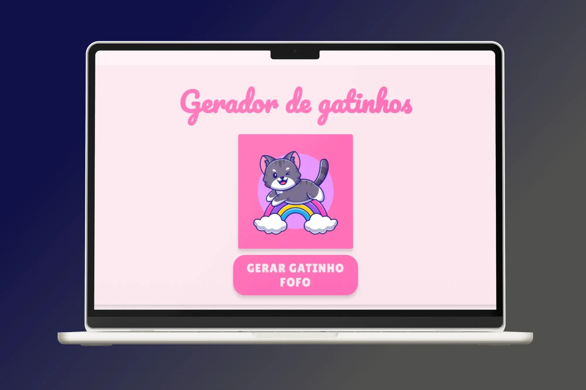
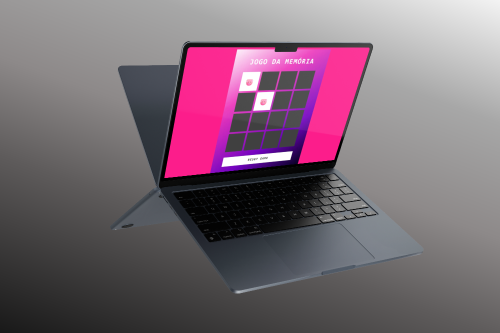

Transformando experiências em soluções, com atenção aos detalhes que fazem a diferença.
Oi! Eu sou a Ana! Profissional em transição de carreira para tecnologia. Sou formada em Direito e Design, com experiência em administração e estou me especializando em Front-End com foco em interfaces criativas e funcionais.
Projetos

Gerador de Gatinhos
Um projeto simples que gera imagens aleatórias de gatinhos usando a API The Cat API. Feito para praticar JavaScript, fetch e manipulação do DOM.
- Botão para gerar uma nova imagem de gatinho
- Imagem inicial exibida antes do clique
- Tratamento básico de erros na requisição

Jogo da Memória
Contribuição com o desafio de projeto 'Criando um Jogo da memória com Emojis Utilizando Javascript' da Dio
- Botão para reiniciar o jogo
- Cartões responsivos quando virados corretamente
Sobre Mim
Oi! Eu sou a Ana Paula — estudante de Análise e Desenvolvimento de Sistemas, curiosa profissional em transição de carreira, entusiasta de tecnologia, leitora compulsiva e viciada em café (ok, esse último é opcional… mas real).
Minha história começa no Direito, passa por uma paixão inesperada por Design Gráfico, até chegar ao ponto onde tudo fez sentido: a programação. Foi amor à primeira tag. Hoje, estou mergulhada no mundo do desenvolvimento, aprendendo, testando, errando (bastante) e evoluindo todos os dias com muito entusiasmo.
Trabalho há 8 anos como Assistente Administrativa nas áreas de Departamento Pessoal e Financeiro. Lido com folha de pagamento, eSocial, notas fiscais, relatórios, burocracias em geral… Acredite: isso me treinou bem para lidar com bugs com paciência e persistência.
Sou movida a desafios, adoro entender como as coisas funcionam e não me contento com o superficial. Se você está lendo isso, espero que encontre aqui não só meu progresso técnico, mas também a paixão genuína por estar construindo algo novo e significativo.
Trajetória
Formação Acadêmica
- Tecnologia em Análise e Desenvolvimento de Sistemas - Uninter (2025 - em andamento)
- Tecnologia em Design Gráfico - Uninter (2023 - 2025)
- Bacharelado em Direito - Fundação Educacional do Município de Assis (2012 - 2016)
Além disso, estou participando de bootcamps práticos e intensivos, como:
- Santander Bootcamp - Front-End 2025 | DIO
- Bootcamp Hi Happy - Front-End do Zero | DIO
Foco atual: consolidar meus conhecimentos em HTML, CSS, JavaScript e seguir explorando Python com carinho. Sempre de olho em boas práticas, acessibilidade, semântica e, claro, criando interfaces bonitas e funcionais.
Experiência Profissional
Atualmente, sou responsável por:
- Folha de pagamento e benefícios;
- Organização de exames, licenças e processos trabalhistas;
- Lançamento de notas fiscais, pagamentos, transferências;
- Conciliação bancária e emissão de NF;
- Conhecimento básico em eSocial e guias trabalhistas.
Essa bagagem me trouxe organização, resiliência, atenção aos detalhes e uma baita autonomia. Todas essas habilidades têm sido muito úteis no meu dia a dia como estudante e desenvolvedora em construção.
Contato
Entre em contato comigo através das redes sociais, ou me mande uma mensagem abaixo!